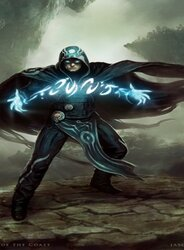

Kiora's primary color affiliation is blue and green mana, reflecting her mastery over water and nature. known for her love of exploring the oceans and her ability to summon and command massive sea creatures.

Nahiri is closely associated with the colors white and red mana and is known for her mastery of lithomancy, the magic of stone and earth, and her ability to manipulate metal and stone.
Chandra is a powerful and fiery planeswalker, Her primary color affiliation is red mana, and she is known for her pyromancy abilities, harnessing the power of fire to defeat her foes.

Jace is a powerful telepathic planeswalker, His primary color affiliation is blue mana, and he is known for his exceptional skills in mind magic and illusion.